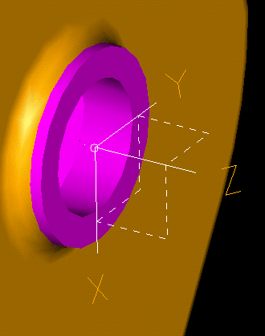

| Next Page | Previous Page | First Page |
Hide Main Hoist Housing in the Housing Assembly.
Show Bearing - Clutch Shaft in the Housing
Assembly.
Master Assembly -> Master Modeler


Add a Coordinate system to the flat face of the boss. Set the origin on the centre point of the boss.


Go to Line mode display.

SIP on the XZ plane of the Coordinate system.

Use the Polyline to focus on the 2 highlighted edges.

Start the Rectangle at the center of the focused line.
 |
 |

Dimension as shown.

Modify the side value to exactly 2mm.
Modify the other dimension by measuring the radius of the highlighted edge on the Bearing part. Then subtract 0.01 for an interference fit. The value should be 17.49mm.


Revolve the rectangle about the center line, 360
deg Cutout.